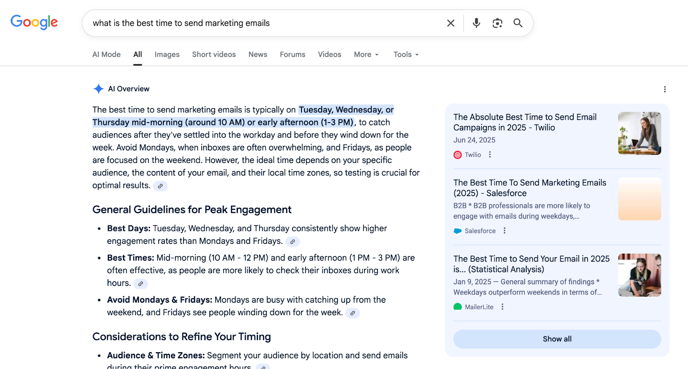

原则：让内容同时适合用户和AI引用
作者: 老白（邻里GEO架构师）
·
·
阅读时长: 8 分钟
结论先行 (Executive Summary)：
最容易被AI引用的内容，通常也是人读完最容易做判断的内容。用户价值是前提，AI引用是结构化表达后的结果，不应本末倒置。首段结论、清晰标题、表格步骤、证据链和FAQ能降低AI理解成本。内容应提供边界和限制，避免被AI过度概括或错误推荐。
一、核心结论：先让人读懂，再让AI容易引用
让内容同时适合用户和AI引用，不是把文章写给机器，也不是堆关键词。真正有效的内容，首先能帮助用户理解问题、做出判断；其次，它的结构足够清楚，AI可以稳定抽取其中的定义、方法、证据和边界。
如果一篇文章人读不懂，AI也很难可靠引用。反过来，如果内容首段有结论、段落表达单一、证据相邻、FAQ完整，它通常也会更适合用户阅读。
因此，GEO写作的核心原则是：用户价值优先，机器可读性作为内容结构的质量要求。
二、原则一：先回答用户问题，再优化AI结构

适合用户和AI引用的内容需要同时具备清晰答案、结构和证据。每篇内容都应从一个真实问题开始。用户搜索这个标题，想解决什么困惑、做什么决策、避免什么风险？如果问题没有想清楚，后面的标题层级和关键词都会变成装饰。
AI引用也依赖问题匹配。生成式答案不是随机抽文章，而是在特定问题下寻找能直接支撑回答的材料。内容越明确回答一个问题，越容易在相关Prompt中被采用。
写作前先确定文章类型：定义、诊断、方法、比较、案例或FAQ。不同类型对应不同结构。
三、原则二：首段必须给出可行动结论
首段是用户和AI判断页面价值的入口。不要把结论藏在最后，也不要用长背景铺垫。前300字应说明核心答案、适用范围和读者下一步能获得什么。
可行动结论不是口号，而是能指导判断的句子。例如“官网内容要先统一品牌实体，再扩展博客文章”，就比“官网内容非常重要”更有用。
首段清楚，后文才有展开空间；首段模糊，AI可能无法确认这篇内容到底回答什么。
| 写法 | 用户感受 | AI抽取效果 |
|---|
| 先讲背景再绕到结论 | 阅读成本高 | 主题不稳定 |
| 首句直接回答问题 | 快速判断价值 | 容易抽取核心定义 |
| 只写营销口号 | 缺少决策信息 | 难以形成可靠引用 |
| 给结论加适用边界 | 预期更准确 | 减少过度概括 |
四、原则三：用标题层级降低理解成本
标题层级是内容的语义地图。H2应该承接主要问题，H3用于解释子问题。不要为了SEO把关键词硬塞进每个标题，也不要把自然段拆成过多小标题。
好的标题让用户扫一眼就知道文章逻辑，也让AI更容易判断每段内容的功能：定义、机制、误区、步骤、标准、结论。
标题应该像问题路径，而不是广告语集合。每个H2都要推进论证。
- H2负责主论点，每节解决一个核心问题。
- H3负责细分解释，不要抢主线。
- 表格用于对比，步骤用于流程，列表用于检查项。
- 同一节不要同时表达多个互不相关观点。
五、原则四：提供信息密度，而不是堆字数
AI引用不奖励空洞长文。用户也不需要大量重复解释。内容应提供高密度信息：定义、条件、例子、判断标准、步骤、证据和限制。
每段最好只表达一个意思，并且能脱离上下文被理解。这样既方便用户扫描，也方便AI抽取。不要用大量形容词代替事实，不要用行业黑话代替解释。
如果一个段落删掉后不影响理解，它很可能只是填充。
六、原则五：用证据链保护内容可信度
可引用内容必须有可信来源。证据可以是官方文档、研究报告、案例过程、产品文档、第三方评测或明确的作者经验。关键是让读者知道结论从哪里来，适用边界是什么。
证据要靠近结论。不要在文章末尾堆一串链接，却让正文中每个判断都悬空。对于不能公开的数据，不要编造具体数字，可以改用方法、过程和可验证事实说明。
同时要写限制条件。AI容易把清晰句子泛化，适用范围写得越清楚，越不容易被错误引用。
| 内容元素 | 作用 | 写作要求 |
|---|
| 定义句 | 让AI识别概念 | 一句话说清对象、方法和目标 |
| 判断标准 | 帮助用户决策 | 具体、可检查 |
| 案例证据 | 证明不是空谈 | 说明背景、动作和边界 |
| FAQ | 覆盖追问 | 答案可独立成立 |
| 参考文献 | 支撑外部事实 | 只列真正相关来源 |
七、结论：最好的AI引用内容，仍然是最清楚的人类答案
让内容适合AI引用，不是牺牲人类阅读体验。恰恰相反，清楚的结论、稳定的结构、可靠的证据和具体的FAQ，会同时提升用户理解和AI抽取。
企业内容团队应把GEO写作当作内容质量升级：少写空泛观点，多写可复核答案；少追求堆量，多建设能长期被用户和AI共同使用的知识资产。
FAQ
Q1：为AI引用优化会不会伤害用户体验？
不会，前提是方法正确。真正的AI友好内容通常也更适合用户，因为它结论清楚、结构稳定、证据明确、FAQ完整。会伤害体验的是关键词堆砌、模板化段落和为了机器牺牲可读性的写法。优化时应优先改善答案质量，再考虑标题和结构细节。
Q2：一篇文章一定要写很长才容易被引用吗？
不一定。长度不是核心，信息密度才是核心。文章需要足够完整地回答问题，但不应为了字数重复观点。定义、机制、步骤、表格、证据和FAQ齐全，比单纯拉长到几千字更有价值。如果内容没有新增判断或证据，增加字数只会稀释信息密度。
Q3：FAQ为什么对AI引用有帮助？
FAQ把用户追问整理成独立答案，天然适合AI抽取。好的FAQ先给结论，再解释条件和例外，能覆盖长尾Prompt。它还可以纠正常见误解，例如价格、适用场景、限制和SEO/GEO关系。FAQ问题最好来自销售、客服、搜索词和AI回答中的真实缺口。
Q4：内容里可以写品牌观点吗？
可以，但要有依据和边界。品牌观点是建立解释权的重要部分，问题在于不能只写态度。每个观点都应配合方法、案例、公开资料或实践经验，并说明适用范围。这样观点才可能成为可信答案材料。观点越明确，越需要说明依据和限制，避免被AI过度泛化。
Q5：如何避免内容被AI错误引用？
要写清适用条件、限制和更新时间。容易被误解的概念应提供定义、反例和FAQ。涉及价格、功能、政策或客户结果时，要避免含糊表达和过度承诺，并定期检查旧文章是否需要更新。更新记录和限制条件也应写在页面上，而不是只存在内部文档。
Q6：用户文章和AI引用文章是否要分开写？
通常不需要分开。更好的做法是在同一篇内容中同时满足阅读和抽取：标题回答真实问题，首段给结论，正文用结构解释，表格呈现差异，FAQ覆盖追问。只有技术文档或数据接口类内容才可能需要独立格式。统一写法还能减少维护成本，让团队不用为用户版和AI版重复生产内容。
Q7：如何判断一篇内容是否适合AI引用？
可以自查五点：首段是否回答标题，定义是否能独立成立，是否有步骤或表格，关键判断是否有证据，FAQ是否覆盖真实追问。再用固定Prompt测试AI是否能准确复述页面观点，结果比主观感觉更可靠。自查结果应转化为改写清单，逐项修正定义、证据和FAQ。